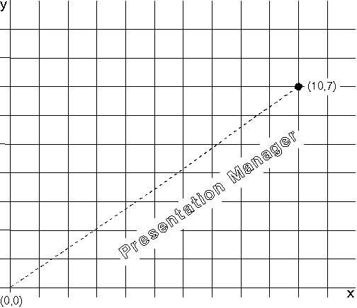
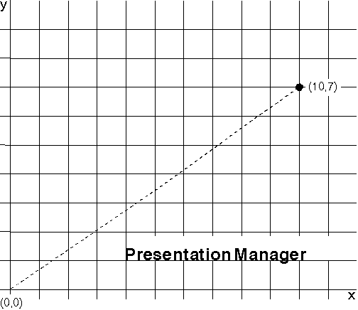
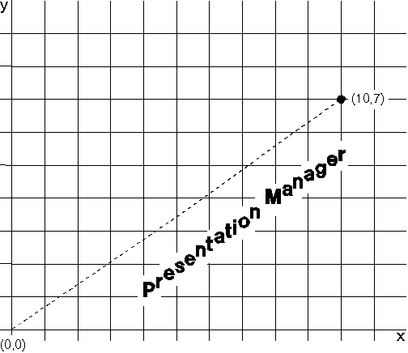

The character angle is defined by the x-axis and a vector drawn through the origin to a specified point in a Cartesian coordinate system. Neither (0,0) nor the specified point need have any relation to the current position. The operating system then aligns the baseline with this vector.
An application can retrieve the point that defines the character angle vector using GpiQueryCharAngle. An application can set the character angle using GpiSetCharAngle. This function accepts as input the x- and y-coordinates of a point that defines the new vector. When you specify an angle, it becomes the current setting. To reset the character angle vector to its default value (parallel to the x-axis), call GpiSetCharAngle with both x and y equal to 0.
The effects of the current character angle vary depending on the current character mode and the current font type. When the current font is an outline font, the current character angle determines the angle of both the whole string and the individual characters in the string, regardless of the current character mode. The baseline of each character cell is drawn parallel to the new baseline, as shown in the following figure.
Effect of the Character Angle on an Outline Font
The character string is drawn parallel to the vector drawn from the origin to (10,7). The baseline of each of the character cells also is drawn parallel to this vector.
The character angle value is ignored if the current font is an image font and the current character mode is CM_MODE1, as shown in the following figure. 
Effect of the Character Angle on an Image Font in CM_MODE1
The angle of the character string is unaltered by GpiSetCharAngle.
When the current font is an image font and the current character mode is CM_MODE2, the current character angle determines the angle of the whole string but does not affect the individual characters in the string. The character reference point, which is the point at which the character baseline intersects the left edge of the character cell, is placed on a line parallel to the new baseline. The baseline of each character cell remains parallel to the x-axis, as shown in the following figure.
Effect of the Character Angle on an Image Font in CM_MODE2
The character string is drawn parallel to the vector from (0,0) to (10,7).
Each of the characters in the string in the previous figure is drawn with the vertical sides of its character cell parallel to the y-axis, and with the horizontal sides of its character box parallel to the x-axis.